| Frauen | Männer | |
|---|---|---|
| Gespräch 1 | ||
| Gespräch 2 | ||
| Gespräch 3 |
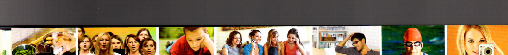
aLesen Sie die Komplimente und ordnen Sie zu.
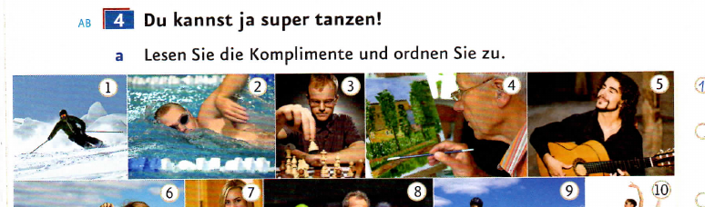
bWas machen die anderen Personen? Suchen Sie die Wörter im Bildlexikon und schreiben Sie.
| können | |
|---|---|
| ich | kann |
| du | kannst |
| er/sie | kann |
| wir | können |
| ihr | könnt |
| sie/Sie | können |
aOrdnen Sie die Wörter.
bWer kann was? Arbeiten Sie auf Seite 83. Ihre Partnerin / Ihr Partner arbeitet auf Seite 86.
Aktionsseite 83 ↗ Aktionsseite 86 ↗cWas können Sie gut / gar nicht? Sprechen Sie.
Arbeiten Sie zu viert. Spielen Sie ein Hobby vor. Die anderen machen Komplimente. Bedanken Sie sich dann.
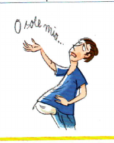
aHören Sie. Welches Foto passt?
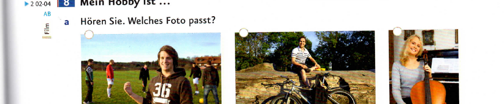
bHören Sie noch einmal und ordnen Sie zu.
cWas machen Sie gern in der Freizeit? Sprechen Sie.
| fahren | lesen | treffen | |
|---|---|---|---|
| ich | fahre | lese | treffe |
| du | fährst | liest | triffst |
| er/sie | fährt | liest | trifft |
7 · Sprechtraining
aArbeiten Sie zu zweit. Würfeln Sie eine Antwort. Fragen und antworten Sie dann.
bWorum können Sie noch bitten? Schreiben Sie vier Fragen auf Karten. Legen Sie die Karten auf einen Stapel.
cSpielen Sie zu viert. Ziehen Sie Karten. Fragen und antworten Sie dann.
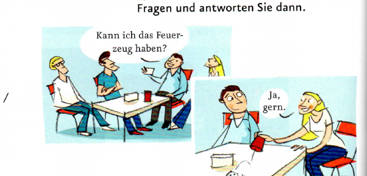
| Modalverb können | |
|---|---|
| ich | kann |
| du | kannst |
| er/sie | kann |
| wir | können |
| ihr | könnt |
| sie/Sie | können |
aWas sagt Manuel? Was sagt Jonas? Hören Sie und ordnen Sie zu.
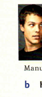
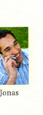
bKarina hat ein Problem. Was macht sie jetzt wohl?
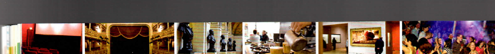
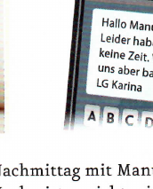
| sehen | |
|---|---|
| ich | sehe |
| du | siehst |
| er/sie | sieht |
aSchreiben Sie Karten. Verwenden Sie die Wörter aus dem Bildlexikon der Lektionen 7 und 8.
bZiehen Sie eine Karte und antworten Sie.
aHören Sie und ergänzen Sie vor oder nach.
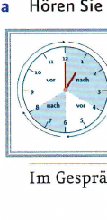
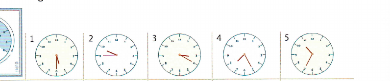
bUhrzeiten üben: Arbeiten Sie zu zweit auf Seite 80.
Aktionsseite 80 ↗aLesen Sie den Chat und ergänzen Sie.
ManuXL: Was machst du heute Nachmittag?
tami_92: Weiß ich noch nicht.
ManuXL: Lust auf Schwimmbad?
tami_92: Nö. Keine Lust. 😞
ManuXL: Gehen wir ins Kino?
tami_92: Gute Idee! 😊 Wann denn?
ManuXL: Um zwei, um vier oder um sechs?
tami_92: Sechs Uhr ist zu spät. Heute Abend habe ich keine Zeit. Gehen wir um vier?
ManuXL: Okay. Dann bis vier!
tami_92: Ja, bis dann! 😊
| wissen | |
|---|---|
| ich | weiß |
| du | weißt |
| er/sie | weiß |
bEtwas vorschlagen und darauf reagieren. Was passt? Ordnen Sie zu.
cVerabreden Sie sich im Chat. Arbeiten Sie zu zweit auf Seite 87.
Aktionsseite 87 ↗aErgänzen Sie die Wochentage.
bTageszeiten. Ordnen Sie zu.
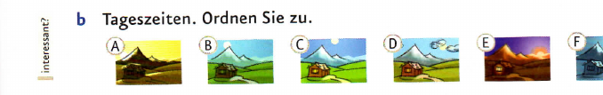
cGespräche üben: sich verabreden. Arbeiten Sie zu zweit auf den Seiten 89 und 93.
dWelcher Tag ist Ihr Lieblingstag? Was ist Ihre Lieblingstageszeit? Was machen Sie da?
8 · Schreibtraining
aLesen Sie die E-Mail und kreuzen Sie an.
Betreff: Heute
Timo!
Komme doch nicht.
Keine Zeit!
Sina
bSortieren Sie die Wendungen. Schreiben Sie dann die E-Mail neu.
cLaden Sie Ihre Partnerin / Ihren Partner ein. Sie/Er sagt schriftlich zu oder ab.
| temporale Präpositionen am, um |
|---|
| am + Wochentage/Tageszeiten: am Dienstag / am Abend ❗ in der Nacht |
| um + Uhrzeiten: um drei Uhr |
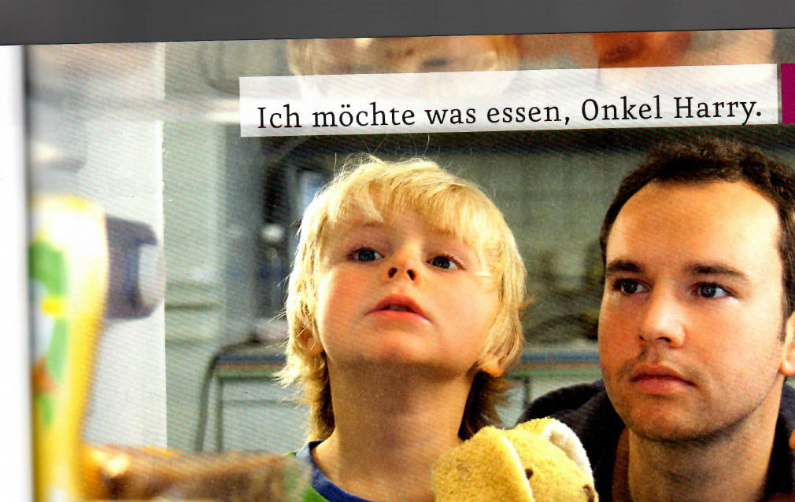
Ordnen Sie zu und sprechen Sie mit Ihrer Partnerin / Ihrem Partner.
| das Getränk, -e | das Essen | das Obst | das Gemüse |
|---|---|---|---|
| das Bier, -e | die Pommes frites (pl.) | die Banane, -n | der Salat, -e |
| der Kaffee, -s | das Schnitzel, - | die Orange, -n | die Kartoffel, -n |
| der Saft, -e | die Wurst, -e | der Apfel, - | die Tomate, -n |
| das Wasser, - | der Hamburger, - | die Erdbeere, -n | die Zwiebel, -n |
| der Tee, -s | die Pizza, Pizzen | die Melone, -n | |
| die Milch | die Nudeln (pl.) | die Kirsche, -n | |
| der Reis | |||
| das Brot, -e | |||
| das Brötchen, - | |||
| das Croissant, -s | |||
| die Suppe, -n | |||
| das Fleisch | |||
| der Fisch, -e | |||
| die Schokolade | |||
| der Kuchen, - | |||
| der Schinken, - | |||
| der Käse |
aWie sieht Justus aus?
bHören Sie noch einmal und kreuzen Sie an.
dUnd Sie? Was essen Sie heute? Schreiben Sie Karten und legen Sie die Karten auf einen Stapel. Arbeiten Sie dann zu zweit.
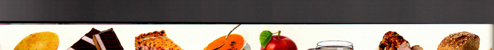
Arbeiten Sie zu dritt. Lesen Sie das Interview und spielen Sie den Dialog.
aSehen Sie das Bild an. Was ist richtig? Hören Sie und kreuzen Sie an.
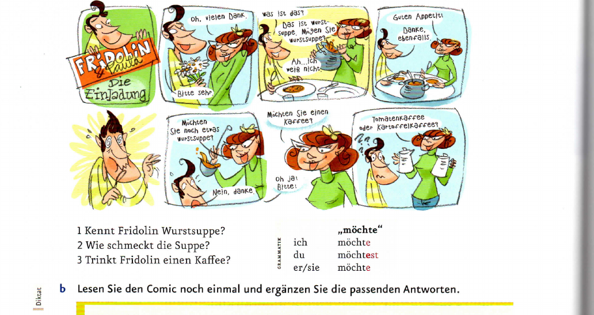
bBeim Essen und Trinken: Was passt zusammen? Arbeiten Sie zu zweit und spielen Sie den Dialog.
aWas passt? Ergänzen Sie den Artikel.
bArbeiten Sie zu dritt. Jede Person würfelt zwei Sätze und liest sie vor.
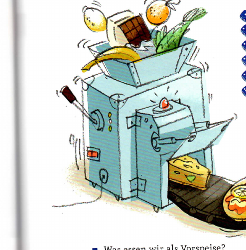
cWas essen Sie gern? Was nicht? Was trinken Sie gern? Was nicht?
aArbeiten Sie zu dritt. Erfinden Sie eine Speisekarte. Schreiben Sie Getränke, Vorspeisen, Hauptspeisen und Desserts auf.
bPräsentieren Sie Ihre Speisekarte im Kurs und sammeln Sie alle Speisekarten.
| mögen | möchte |
|---|---|
| ich mag | ich möchte |
| du magst | du möchtest |
| er/sie mag | er/sie möchte |
| wir mögen | wir möchten |
| ihr mögt | ihr möchtet |
| sie/Sie mögen | sie/Sie möchten |
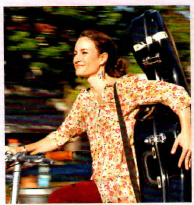
Anja
Bremen, Deutschland
Kategorien: Party, Feste, Leute, Essen, Musik
Letzte Einträge: Nur für Frauen! · Frühstück mit Musik · Endlich wieder Kino!
Über mich: Ich liebe Partys und gute Musik.
Heute Abend ist „Ladies' Night“ im Schwimmbad! Nur für Frauen: schwimmen, sauna, entspannen. Es gibt auch Musik und gute Drinks. Kommt vorbei!
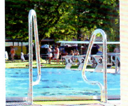
Ich komme! 😊
Morgen früh gibt es Frühstück mit Musik im Café. Gute Musik, gutes Essen: Brötchen, Croissants, Kaffee, Saft. Wir beginnen um 9 Uhr.
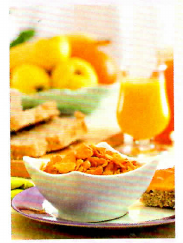
Ich komme! 😊
Im Juni ist endlich wieder Open-Air-Kino! Filme unter dem Himmel, mit Freunden, Popcorn und Getränken. Ich freue mich schon!
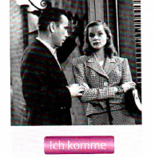
Ich komme! 😊
1 Lesen Sie den Blog und ordnen Sie die Überschriften zu.
3 Lesen Sie den Blog noch einmal. Was macht Anja gern?
4 Gibt es bei Ihnen auch solche Events? Erzählen Sie.
Sehen Sie den Film und korrigieren Sie die Sätze.
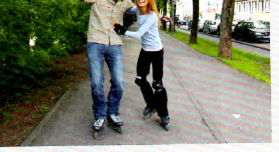
Was machen sie am Wochenende? Sehen Sie den Film und kreuzen Sie an.
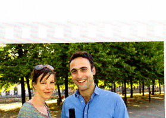
Was bestellen sie? Sehen Sie den Film und kreuzen Sie an.
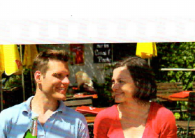
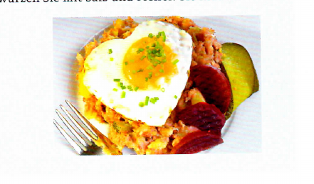
Schreiben Sie das Rezept auf. Präsentieren Sie es im Kurs.
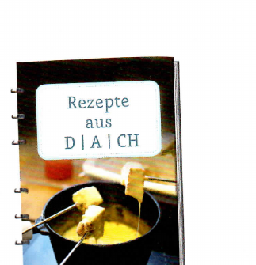
Heute ist der Tag!
2Singen Sie das Lied und machen Sie eine Party!
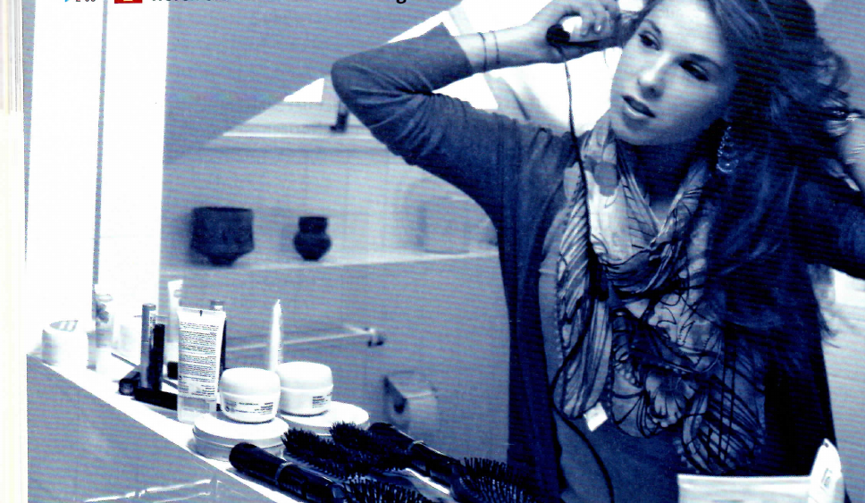